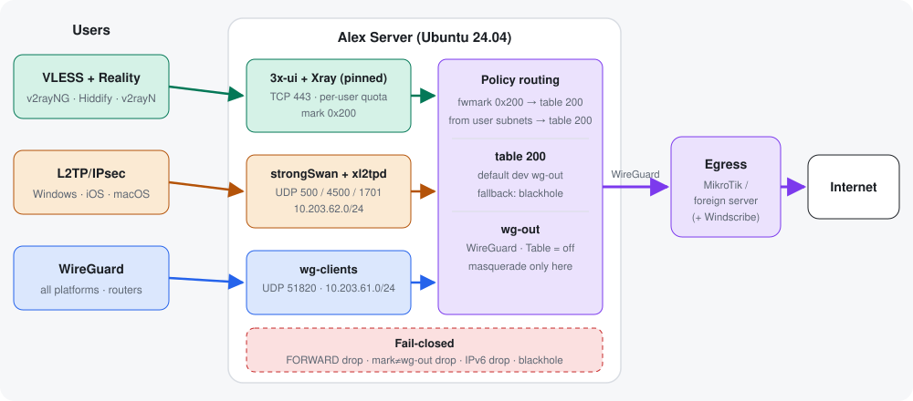

سه روش اتصال برای کاربران. همهٔ ترافیک فقط از یک تونل WireGuard به یک خروجی خارج از کشور میرود. اگر تونل قطع شود، کاربران اینترنت ندارند و هیچ ترافیکی از IP خود سرور بیرون نمیرود.

اپ به SHARE_ADDR:443 وصل میشود. از بیرون، اتصال شبیه HTTPS به سایت هدف (مثلاً دیجیکالا) دیده میشود. Xray کاربر را با UUID شناسایی میکند و مصرفش را ثبت میکند. خروجی egress بستهها را با mark 0x200 علامت میزند. بعد جدول 200، تونل wg-out و خروجی.
اتصال با IKEv1 و PSK روی UDP 500 و 4500 برقرار میشود. داخل IPsec یک نشست L2TP و PPP ساخته میشود و کاربر IP 10.203.62.x میگیرد. قاعدهٔ from 10.203.62.0/24 → table 200 ترافیک را به wg-out میفرستد، با masquerade فقط روی همین تونل.
کلاینت به UDP 51820 وصل میشود و IP 10.203.61.x میگیرد. مسیرش مثل L2TP است. کاربران با wg-user ساخته میشوند و QR میگیرند.
| مورد | مقدار پیشفرض |
|---|---|
| VLESS Reality | TCP 443 |
| پنل 3x-ui و سابسکریپشن | TCP 52667 و TCP 2096 (HTTPS) |
| L2TP/IPsec | UDP 500, 4500 · 1701 فقط داخل IPsec · 10.203.62.0/24 |
| WireGuard کاربران | UDP 51820 · 10.203.61.0/24 |
| تونل خروجی | wg-out · 10.203.70.2/30 ↔ روتر خارجی 10.203.70.1 |
| Policy routing | mark 0x200 و subnetهای کاربران ← table 200 (default dev wg-out + blackhole) |
| Let's Encrypt | TCP 80 فقط برای صدور و تمدید گواهی |
| خرابی | نتیجه برای کاربر | چه چیزی جلوی نشت را میگیرد |
|---|---|---|
| تونل خروجی قطع | اینترنت ندارد | blackhole در table 200 + قاعدهٔ nft «mark ≠ wg-out → drop» |
| Xray متوقف | کاربران VLESS قطع میشوند | هیچ مسیر جایگزینی وجود ندارد |
| درخواست IPv6 | drop | nft: IPv6 کاربران و IPv6 علامتدار drop میشود |
| تلاش برای رسیدن به پنل از داخل VLESS | بسته میشود | routing Xray: آدرسهای private و IP خود سرور ← block |
| ریبوت | همهچیز برمیگردد | alex-routing.service، nftables و wg-quick همه enable هستند |